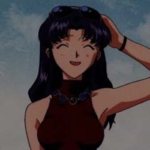
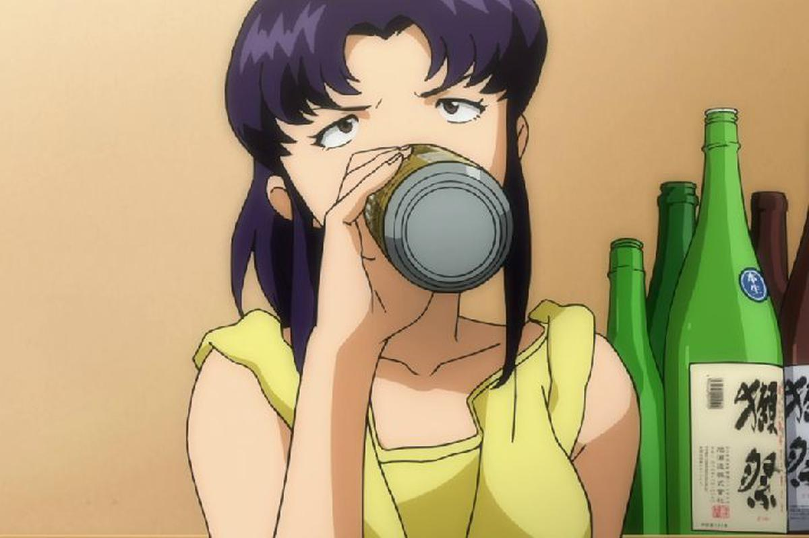
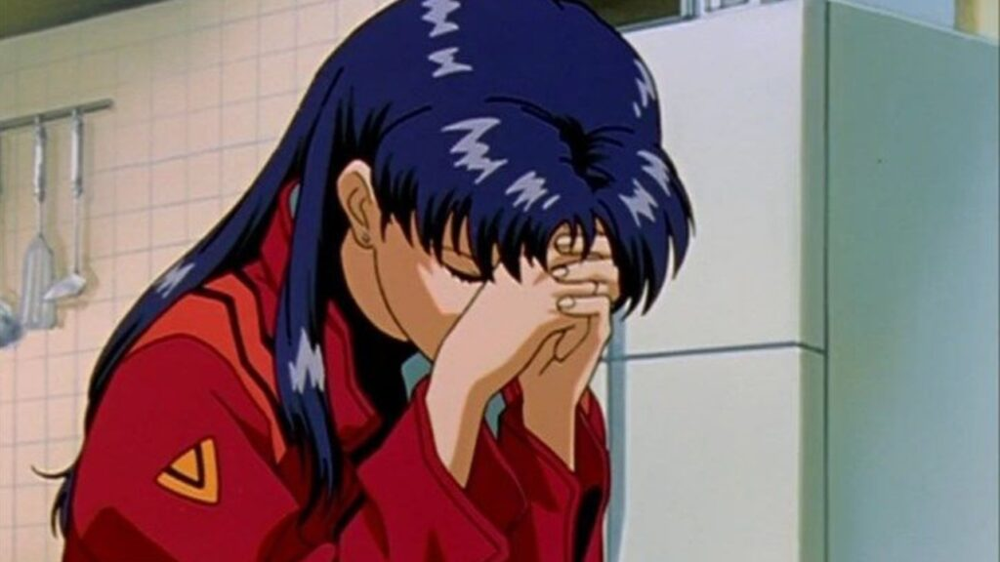

Misato Katsuragi
Misato es una joven de estatura normal, con el pelo color añil y ojos marrones. Tiene una exuberante figura y una personalidad divertida. La mayor parte del tiempo refleja un carácter despreocupado, siendo infantil e inmadura en algunas ocasiones. No es buena cocinera y casi siempre consume comida instantánea, ya que dicha comida es fácil de preparar. Además, su afición por la cerveza es notable, ya que no empieza el día sin su "cerveza de la mañana". Su apartamento siempre está desordenado, dejando la tarea de ordenarlo en manos de Shinji.
Generalmente Misato se comporta muy alegre y optimista, siendo seductora en algunas ocasiones. También es una mujer inteligente, siendo muy profesional en el trabajo. Ella está al mando de las operaciones tácticas de la organización. Cuando la situación lo requiere, Misato demuestra grandes habilidades para planear e incluso improvisar tácticas militares (como la Operación Yashima).

Misato está capacitada para asumir el mando durante la ausencia del comandante Gendo Ikari, y ha demostrado su capacidad para tomar decisiones correctas bajo situaciones extremas. Su espontaneidad y genio estratégico es evidente durante los ataques de los Ángeles. Gracias a estas capacidades, NERV ha logrado superar amenazas de gran magnitud como lo fueron Ramiel y Sahaquiel.
A veces utiliza métodos poco ortodoxos para alcanzar los objetivos deseados, siendo un buen ejemplo la operación para matar a Gaghiel, que consistía en hacer que el ángel engullera dos acorazados, gracias a que la Unidad-02 abriría sus fauces, para luego disparar todos los cañones contra su núcleo, situado en el centro de la boca.
Misato es una persona muy noble, de gran corazón y bondad, pero que se siente sola y triste debido a los acontecimientos que le sucedieron en su pasado (la muerte de su padre en el Segundo Impacto). Durante la serie se ve que trata de ocultar su soledad tras una máscara de alegría y sonrisas.

Otra característica de Misato es que siempre busca la compañía de los hombres. Conoce su atractivo físico y se comporta muy seductora con los hombres; hay quienes afirman que Misato es muy abierta en el sexo, siendo demasiado extrovertida en ocasiones, ya que se vale mucho de las insinuaciones para atraer a los hombres. En uno de los episodios finales ella menciona que le gusta hacer esto, ser provocativa con los hombres, en sus propias palabras, le gusta "sentirse sucia".
En realidad, ella lo hace para así huir de la soledad (su mayor miedo y al cual tiene pavor) y encontrar la compañía ideal (el "padre" que nunca tuvo, Misato es conocida por padecer lo que se conoce como el Complejo de Electra: una especie de fijación obsesiva hacia la figura paterna por parte de la hija). Este problema nació debido a la personalidad de su padre, quien estaba obsesionado con su investigación y descuidaba a su familia.
A pesar de eso, la joven Misato lo acompañó durante la expedición científica a la Antártida. Momentos antes del Segundo Impacto, el Dr. Katsuragi utilizó sus últimas fuerzas para llevar a su hija a una cápsula de salvamento. Ella fue la única sobreviviente, lo cual intensificó su trauma. En un principio ella encontró compañía en Kaji, del cual se separó irónicamente por ser "demasiado parecido a su padre", y después la vería en Shinji, con el cual vio cierta identificación.
El "beso de adultos" que Misato da a Shinji durante The End of Evangelion es interpretado de diversas formas por los fans. Para algunos, el beso fue un incentivo para darle valor al joven, mientras que para otros fue como la declaración de su amor hacia Shinji. Según otras hipótesis no aclaradas por Hideaki Anno, son ambas cosas a la vez. Esa faceta de la personalidad de Misato, una especie de dualidad, es un rasgo de su carácter que la distingue.
